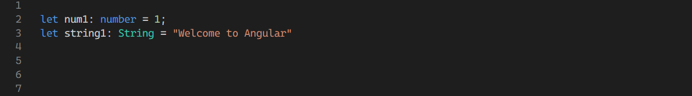
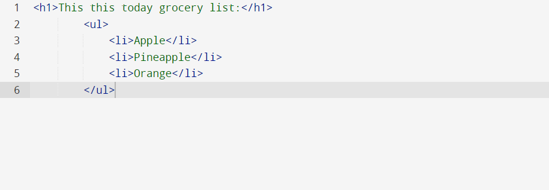
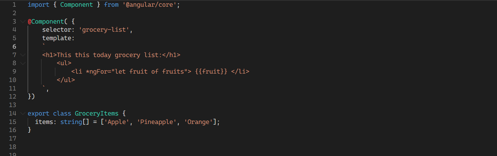
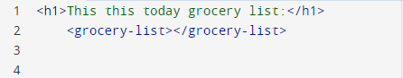

Angular is an open-source framework that is developed and maintained by Google.
Angular was first released in September 2016, which is a “successor” of its earlier version, AngularJS. Angular is a
framework that is created with goals to create single-page web applications. Angular offers easy, structured ways to build
reliable, scalable and up-to-date applications.
Some popular web applications are built using Angular:
Microsoft Office
Gmail
Youtube
Mixer
Paypal
Forbes
Upwork
Deutsche Bank
Etc.
History and Foundations
Angular’s predecessor, AngularJS was first released in 2010 and was written in Javascript.
AngularJS received a large amount of usage from developers and also has a strong support community.
However, as time went on, AngularJS developers ran into many issues and challenges owing to AngularJS
weaknesses which eventually led to the complete rewriting of the framework. Angular was developed to address
many limitations of this. Angular’s initial release was in September 2016 and was completely redesigned and rewritten
in Typescript. Typescript, in short, is an enhancement of Javascript, which offers many improvements including
two most important aspects: Static Typing and Object-Oriented Programming approach.
Static Typing, in short, is defining the type of variables. In OOP languages such as Java or Python, each created variable will have its types such as “int”, “String”, etc. This is important because Static Typing would help significantly with error-catching in the development process, less susceptible to runtime errors, as well as documenting. While Javascript offers to some degree defining variable types, Typescript makes it compulsory which in turn can be a valuable tool for developers to work on larger and more complex, robust projects.

Static Typing in Typescript
Typescript also introduces into Javascript many Object-Oriented Programming principles such as interfaces, classes, inheritance, etc. This will make web application development becoming more flexible, more maintainable as well as more scalable.
As just briefly explained modern Angular’s foundation, it was released with some of these prominent improvements from AngularJS:
Improved Performance: new Angular is written in Typescript, which is generally faster and more efficient than its old version. This is extremely valuable as application development is growing more and more complex and robust.
Maintainability: As applications become larger and more complex, Angular, written in Typescript also offers a more modular and component-based framework which helps significantly in the process of creating and managing the applications.
Scalability: New Angular offers improvements as well as less limitations which enable high scalability. One of the main addresses when rewriting Angular is to offer a reliable tool to manage dependencies and change detections.
Advantages

Create a list in Javascript

Create a list in Angular

Calling component
Based on the comparisons of two code blocks, one written in plain HTML and another written using Angular framework, Angular is much more complex and time consuming, then why would Angular be a great choice to use when building a web application?
These two blocks of code are only illustrations of the differences of traditional plain HTML and Angular. Unlike declaring a list on HTML, which may only take a few lines, doing the same action requires one to create a “component” of the list. Component in Angular is a marked class of an object, which contains information such as data and logic (similar to a class in Java). The declared component also has metadata such as selector, template, styles, etc. This allows the HTML calls the declared component through a metadata.
As demonstrated in one example above, Angular will be a useful tool that comes with many advantages:
Two-Way Data Binding: This feature allows the binding of the declared component to the view, which is called through metadata. Therefore, any changes made from both the view and the backend’s component will be reflected automatically accordingly. This is extremely useful for large and complex sites that use many external APIs.
Component-Based Architecture: written in Typescript, Angular enables developers to develop the applications from smaller parts to other parts. Additionally, as an OOP framework, components within the code are also able to be reused, making it can be managed easily even when the application grows larger and more complex.
Dependency Injection: Allow the developer to easily manage dependency, modify implementations of dependency, etc. This allows developers to write and test code more easily
Declarative Programming: as a framework, Angular allows the developer to be able to focus more on their ideas on the application, rather than emphasizing too much on writing a lot of code to make it happen
Prequisitive
HTML & CSS: Basic knowledge to create a web application, responsible for creating basic front views and decorations.
Javascript: Handling necessary functionality of the web application
Typescript: Angular is written in Typescript, proficient with this will significantly improve the capability of developer